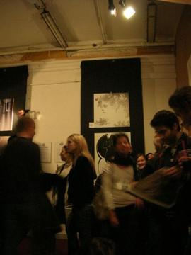
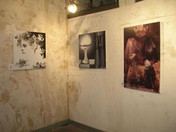
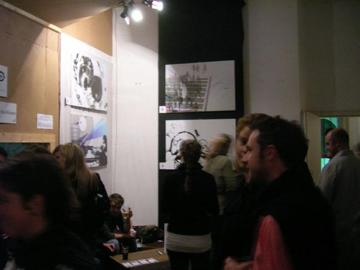
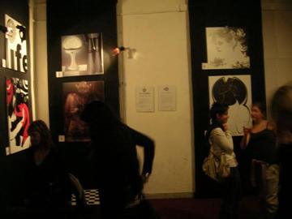
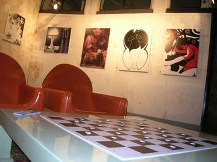
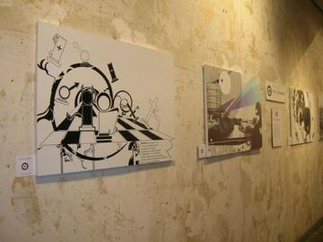
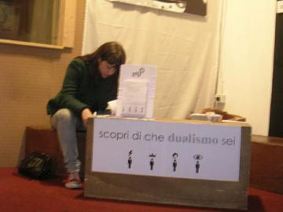
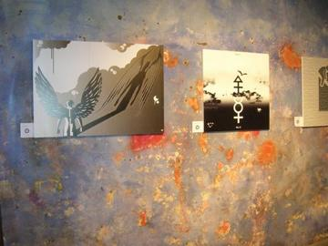
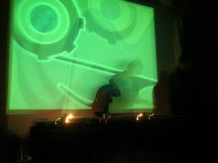
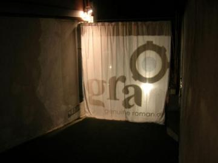

2006 · Principale · Tema/Colore
Tema/Colore 07
Dualismo / Bianco e nero
Settima e ultima uscita di Tema/Colore: tema Dualismo, bianco e nero. Mostra all’Extra Gallery di viale Giotto, poi in replica al La Palma Club. In sette uscite il progetto ha messo insieme il primo network di artisti intorno a GRA.
Opere 14


La serata 10 foto




















Artisti 14
Anna Laura MillacciBarbara ThermesChiara TomassiniFrancesco BellonGinevra Virgili · gin°Liza Marie CalestiniMassimiliano PanzironiMichele MariMiriam Tognella · Disorder DesignRoberta Rizzi · RoRiStefano Longo · thisisstupidTommaso Zanderigo IonaValentina TataValerio Spinelli
GRA — Genuine Roman Art · RomaOpere © i rispettivi autori